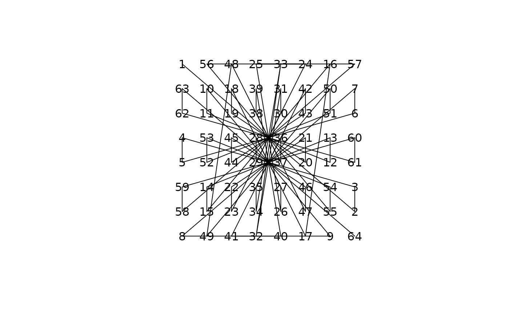

Create and Investigate Magic Squares
magic-package.RdA collection of functions for the manipulation and analysis of arbitrarily dimensioned arrays. The original motivation for the package was the development of efficient, vectorized algorithms for the creation and investigation of magic squares and high-dimensional magic hypercubes.
Details
The DESCRIPTION file:
This package was not yet installed at build time.
Index: This package was not yet installed at build time.
Author
Robin K. S. Hankin [aut, cre] (ORCID: <https://orcid.org/0000-0001-5982-0415>)
Maintainer: Robin K. S. Hankin <hankin.robin@gmail.com>
References
R. K. S. Hankin 2005. “Recreational mathematics with R: introducing the magic package”. R news, 5(1)
Examples
magic(6)
#> [,1] [,2] [,3] [,4] [,5] [,6]
#> [1,] 7 6 35 34 15 14
#> [2,] 8 5 33 36 16 13
#> [3,] 27 26 19 18 11 10
#> [4,] 25 28 20 17 9 12
#> [5,] 23 22 3 2 31 30
#> [6,] 21 24 1 4 29 32
magicplot(magic(8))

magichypercube.4n(1)
#> , , 1
#>
#> [,1] [,2] [,3] [,4]
#> [1,] 64 5 9 52
#> [2,] 2 59 55 14
#> [3,] 3 58 54 15
#> [4,] 61 8 12 49
#>
#> , , 2
#>
#> [,1] [,2] [,3] [,4]
#> [1,] 17 44 40 29
#> [2,] 47 22 26 35
#> [3,] 46 23 27 34
#> [4,] 20 41 37 32
#>
#> , , 3
#>
#> [,1] [,2] [,3] [,4]
#> [1,] 33 28 24 45
#> [2,] 31 38 42 19
#> [3,] 30 39 43 18
#> [4,] 36 25 21 48
#>
#> , , 4
#>
#> [,1] [,2] [,3] [,4]
#> [1,] 16 53 57 4
#> [2,] 50 11 7 62
#> [3,] 51 10 6 63
#> [4,] 13 56 60 1
#>
is.alicehypercube(magichypercube.4n(1,d=5),4,give.answers=TRUE)
#> $answer
#> [1] TRUE
#>
#> $alice.sums
#> [,1] [,2] [,3] [,4] [,5]
#> [1,] 131200 131200 131200 131200 131200
#> [2,] 131200 131200 131200 131200 131200
#> [3,] 131200 131200 131200 131200 131200
#> [4,] 131200 131200 131200 131200 131200
#>